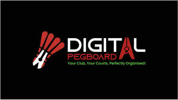

Trade Mark Journal No.2025/034 22 August 2025
UK00004248091 12 August 2025 (9,41,42)

- Class 9
- Mobile software; Software for mobile phones; Computer software for mobile phones; Application software for mobile phones; Mobile application software; Computer application software for mobile phones; Software for mobile device management; Mobile device management software; Application software for mobile devices; Downloadable software applications for mobile phones; Software and applications for mobile devices; Software applications for use with mobile devices; Software applications for mobile devices; Computer application software for mobile telephones; Electronic game software for mobile phones; Software for smartphones; Smartphone software; Mobile apps; Computer programs and software for image processing used for mobile phones; Computer game software for use on mobile devices; Computer game software for use on mobile and cellular phones; Downloadable software in the nature of a mobile application; Application software for smart phones; Downloadable smart phone applications (software); Computer software for use on handheld mobile digital electronic devices and other consumer electronics; Downloadable application software for smart phones; Software; Mobile computers; Smartphone software applications, downloadable; Application software for wireless devices; Computer software for cellular phones; Computer e-commerce software; E-commerce software; Downloadable mobile applications for use with wearable computer devices; Multimedia software; Computer software for mobile applications that enable interaction and interface between vehicles and mobile devices; Downloadable smart phone application software; Telecommunications software; Computer software platforms; Computer telephony software; Mobile telecommunications handsets; Downloadable graphics for mobile phones; Digital telephone platforms and software; Augmented reality software for use in mobile devices; Electronic game software for wireless devices; Downloadable applications for use with mobile devices; Downloadable applications for mobile devices; Collaboration software platforms [software]; Computer software to enable the transmission of photographs to mobile telephones; Downloadable computer software for blockchain technology; Application software for smart TV; Mobile phones; Digital solutions provider [DSP] software; Communications software; Software for online messaging; Downloadable electronic game software for wireless devices; Downloadable mobile applications; Internet messaging software; Gaming software; Assistive software; Computer application software for use with wearable computer devices; Downloadable computer game software via a global computer network and wireless devices; Computer application software for TV; Computer software for advertising; Computer software applications; Software for tablet computers; Downloadable computer software for use as a digital wallet; Computer software applications, downloadable; Downloadable computer software applications; Software testing software; Interactive computer software; Business technology software; Extranet software; Interactive software; Interactive business software; Computer software for wireless content delivery; Computer antivirus software; Downloadable graphics for mobile telephones; Application software for televisions; Music software; Downloadable software in the nature of a mobile application for playing games; Server-side software; Computer software; Computer application software; Enterprise software; GPS software; Software as a medical device [SaMD], downloadable; E-commerce and e-payment software; Computer software platforms for social networking; Software applications; Downloadable mobile applications for the management of data; Computer software development tools; Batteries for use with mobile telecommunication devices; Downloadable computer security software; Application software for cloud computing services; Computer software for entertainment; Computer gaming software; Software for computers; Intranet software; Web application software; Social software; Software for use in advertising.
- Class 41
- Sports club services; Sports and fitness; Sports coaching; Organising of sports and sports events; Organising of sports competitions and sports events; Organising of sports events and of sports competitions; Fan club services (entertainment); Competitions (Organization of sports -); Organization of sports competitions; Hosting of fantasy sports leagues; Management of events for sporting clubs; Organisation of sports competitions; Organisation of sports tournaments; Fitness club services; Sports and fitness services; Training of sports players; Organisation of sporting competitions and sports events; Organising of sports competitions; Competitions (Organising of sports -); Sports competitions (Organising of -); Organisation of sports events in the field of football; Entertainment club services; Club entertainment services; Club services [entertainment]; Fan club services; Entertainment services in the nature of a wrestling club; Sports training; Training in sports; Provision of sporting club facilities; Club sporting facilities (Provision of -); Sports activities; Sports coaching services; Fan clubs; Sports refereeing; Organization of electronic sports competitions; Providing facilities for sporting events, sports and athletic competitions and awards programmes; Coaching in the field of sports; Tuition in sports; Sports tuition; Dance club services; Sports entertainment services; Arranging of sports competitions; Arrangement of sports competitions; Education, entertainment and sports; Sports facilities (Leasing of -); Organization of sport fishing competitions; Providing sports facilities for skiing; Hire of sports facilities; Organising of sports competitions and events; Providing facilities for sports tournaments; Sports facilities (Hire of -).
- Class 42
- Software as a service [SaaS] featuring software platforms for electronic gaming; Smartphone software design; Updating of smartphone software; Design and development of software in the field of mobile applications; Programming of software for e-commerce platforms; Platforms for gaming as software as a service [SaaS]; Computer software design services; Services for the design of computer software; Design of software for embedded devices; Software as a service [SaaS] featuring software platforms for graphic design; Programming of software for Internet platforms; Software as a service [SaaS] featuring computer software platforms for artificial intelligence; Programming of telecommunications software; Software as a service [SaaS] featuring software for machine learning; Computer and software consultancy services; Computer software consultancy services; Services for designing computer software; Consultancy (Computer software -); Computer software consultancy; Services for updating computer software; Development of computer hardware and software; Computer software programming services; Computer software integration; Services for the leasing of computer software; Computer software rental services; Design of mobile telephones; Updating of software for embedded devices; Rental of computer hardware and software; Development of computer software; Hosting of mobile applications; Computer hardware and software design; Software as a service [SaaS] featuring software for deep neural networks; Computer software development; Design of computer hardware and software.
Digital Pegboard